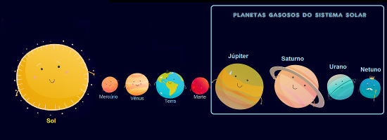

Os planetas não produzem luz, apenas refletem a luz do Sol, que é a estrela do Sistema Solar. Teorias afirmam que os planetas também foram formados a partir de porções de massa muito quente e que todos estão de resfriando. Alguns, entre eles a Terra, já se resfriaram o suficiente para apresentar a superfície sólida. Um corpo celeste é considerado um planeta quando, além de não ter luz própria, gira ao redor de uma estrela. Oito planetas compõem o sistema Solar: Mercúrio, Vênus, Terra, Marte, Júpiter, Saturno, Urano e Netuno. Obs.: A descrição acima está na ordem de afastamento do Sol. Os planetas têm forma aproximadamente esférica. Os seus movimentos principais são o de rotação e o de translação. Cada planeta possui um eixo de rotação em relação a Sol, o mais inclinado deles é o planeta-anão Plutão, pois seu eixo de rotação em relação ao Sol é de 120o, olhe a figura.
